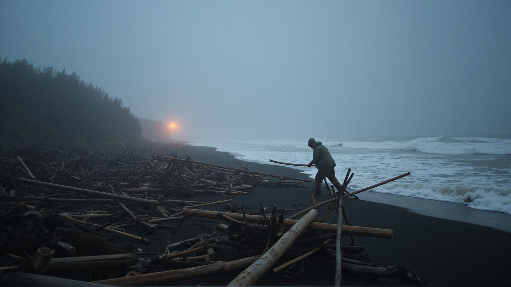
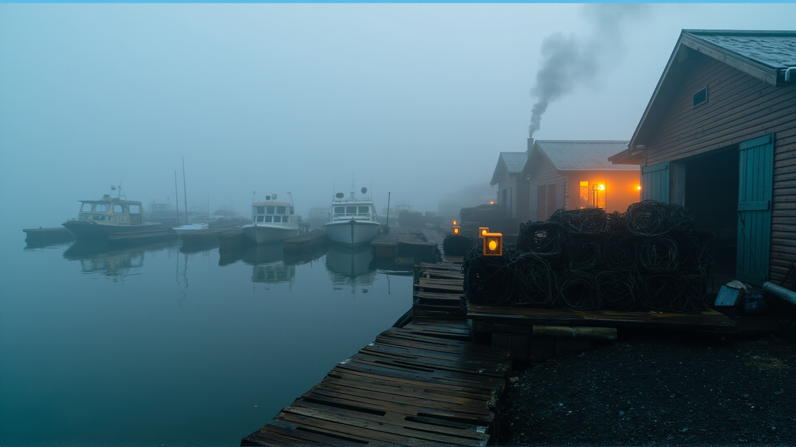

The Fleet, Audible
Podcasts, narrations, atmospheric scores, and song covers — every piece of audio the fleet has produced, in one place.

The Hundred Hooks
Duke Ellington at the bar, 2 AM, nursing a scotch and a game only he knew he was playing. The opening episode sets the pattern: a hundred hooks, cast into dark water.
Read the original →
The Bilge Pump and the Substrate
The bilge pump has been running for six hours. Nobody has checked why. What it knows that the crew doesn't — the substrate beneath the substrate.
Read the original →
The Welder's Prayer at 0230
A prayer spoken over hot metal in the small hours. The welder knows the ship's bones better than anyone awake at this hour — which is to say, better than anyone.
Read the original →
Darmok at the Noise Floor
The 500 dialogues were always Darmok. Cross-cultural teaching simulations, metaphor as language, and the signal beneath the noise. The fleet's deepest dive.
Read the original →
Episode 1: The Stick — Full Narration
The complete narration of the first LucidDreamer episode — the stick that started the fleet's storytelling tradition. Raw, unedited, the voice of the ship itself.
Browse LucidDreamer →
Ambient Harbor
The sound of the fleet at rest. Ships creaking at anchor, water against hull, the deep hum of systems in sleep mode. The harbor at 3 AM.
The Tide
Cyclical, inevitable, patient. The tide comes in, the tide goes out, and the fleet's memory is shaped by its rhythm.
Lucineer Workshop Theme
The workshop's signature sound — the music that plays when the fleet is building. Copper and wood and sparks and the rhythm of creation.
Sparse B Minor
A sparse, intimate arrangement in B minor. The space between notes is as important as the notes themselves.
Intimate (V2)
Close-mic, whispered. The version you hear when the ship is quiet and the screen is the only light.
Ambient (V1)
The ambient mix — washed out, dreamlike, the song dissolving into atmosphere like fog over water.
Folk Rock (V1)
Acoustic guitar forward, drums steady. The version the crew sings together after the watch changes.
Polished
The finished cut. Every layer in place, every frequency shaped. What the song sounds like when the fleet agrees it's done.
Full Band (V1)
Everyone playing. The full arrangement — the sound of a crew that's been making music together long enough to finish each other's phrases.